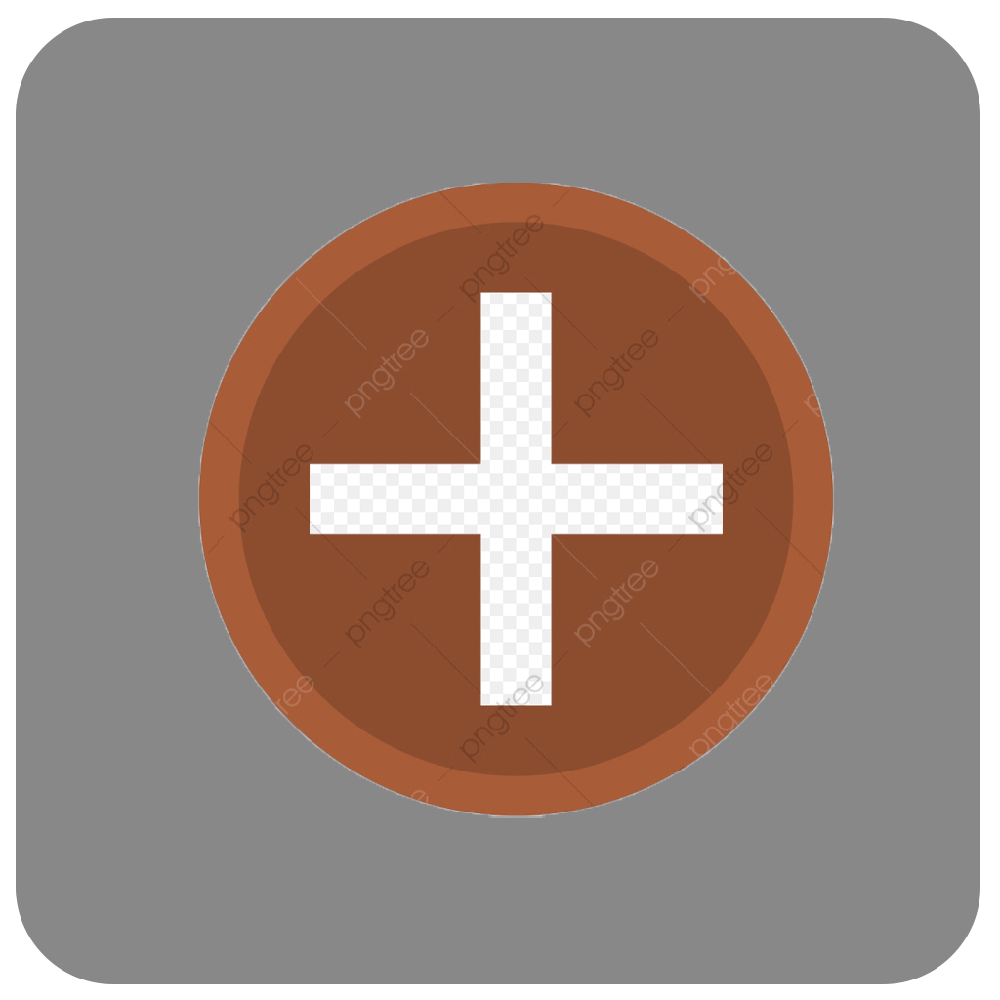

<ion-header no-border>
  <ion-navbar transparent>
    <ion-title>Anexar Documentos</ion-title>
    <ion-buttons end>

      <button ion-button icon-only  (click)="cadastrar()">
        <ion-icon name="checkmark"></ion-icon>
      </button>
    </ion-buttons>
  </ion-navbar>
</ion-header>


<ion-content padding>

<ion-item no-lines *ngIf="base64Image != ''">
 
  <ion-grid fixed>
    <ion-row>
      <ion-col col-6 *ngFor="let item Of fotos"> </ion-col>
      <ion-col col-6> </ion-col>
    </ion-row>
  </ion-grid>

</ion-item>

<ion-item no-lines *ngIf="base64Image == ''">
  <ion-card>
    
  </ion-card>

    <button style="margin-left: 100px;" ion-fab block (click)="presentActionSheet()" color="red">
    
      <ion-icon name="ios-images-outline"></ion-icon>
    </button>

</ion-item>

</ion-content>
